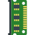

Introduction

Curated selection of my chosen technologies, designed to enhance productivity and efficiency. Outlines are the general systems I use on both my PC and Laptop as well as pieces of software I use regularly and recommend.
Regarding software, my general philosophy for good software is to prioritise free and open-source projects that provide minimalist, effective, and efficient solutions to the purpose they serve. All projects listed below follow these guidelines unless stated otherwise.
- üè† Home
- Home and projects list.
- ✉️ Contact
- My contact information.
Software
üì∞ Operating Systems + GUI
- üñ•Ô∏è Gentoo + dwm
- Gentoo is a Linux distribution that allows for complete control over the software that will be ran on the system. Mostly all software installed on the system is compiled from source including the Linux kernel. Because of this, users can choose to exclude certain features they wish to use in a piece of software, and everything is compiled to run optimally on your specific hardware. Consequently, it is desirable to keep the size of packages installed as small as possible to reduce compilation time, hence why I use the very simple tiling window manager dwm. This system is almost as resource efficient as possible for a Desktop setup and idles at < 1% CPU and RAM.
- üíª Manjaro + xcfe
- Manjaro is an easy to use, Arch based OS which was my first introduction to Linux operating systems. It is a stable system that I have never had a real issue with. Stick to using the Pacman package manager and avoid flatpak, snap and AppImage to keep life simple. Xfce is lightweight and allows you to create a simple attractive looking desktop environment. I could use a tiling window manager with Arch instead, but I do like to have nicer visuals when using a laptop.
{kind=link}
{kind=link}
General Software
- üåê Web browser
- I use Mozilla Firefox with a slightly edited version of the arkenfox user.js file. This user.js file allows you to improve the general privacy of the Firefox browser. I use a variety of extensions, however the most essential extension for all web users is uBlock Origin used to block ads, trackers and unwanted elements from webpages.
- I also occasionally use ungoogled-chromium if I ever need to use a chromium-based browser for whatever reason.
- Most web browsers have their caveats in comparison to other programs I list here and are also the most resource hungry programs I run. Being able to interact with the web tactfully is no small feat and I believe that this is the best solution available today.
- üîé Search engine
- DuckDuckGo. Search the internet without user-tracking.
- IDE
- VSCodium. VSCode without telemetry/tracking.
- üíµ Terminal
- st. Simple terminal, minimal customisable terminal emulator.
- üìÑ PDF viewer
- sioyek. Keyboard based minimal PDF viewer designed with features to allow for comfortable reading of technical documents and research papers.
- üìÇ File manager
- nnn. Minimal customisable CLI file manager.
- üëõ Cryptocurrency wallet
- I only use Monero as a form of online cash and I use the monero-cli-wallet, which I keep an up-to-date Gentoo package of on my GitHub page.
PC Hardware
- Graphics Card
- I use AI in my work and, as of writing, NVIDIA dominate this space compared to anyone else due to their CUDA technology which is widely used in AI projects. Consequently, I use an NVIDIA GeForce RTX 3060 in my PC. There is certainly one big criticism about using NVIDIA Graphics Cards; currently NVIDIA do not provide open-source drivers for any of their cards whereas other providers like AMD do. As a result, sadly, the NVIDIA driver is the only blot of proprietary software on my otherwise fully open-source system (aside from AMD PSP). A list of consumer-grade NVIDIA cards can be found here here and in general nowadays >12GB of vRAM is desirable for personal AI workstations.
 CPU
CPU- AMD Ryzen 9 5950X, 16 cores, 32 threads. A compilers dream.
-  Memory
- 32GB of DDR4 RAM, might increase soon to be able to deal with running large neural networks locally, like LLMs etc.